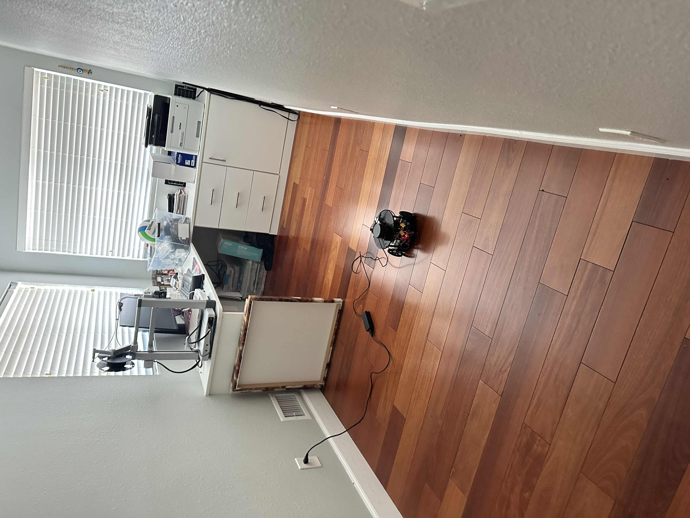
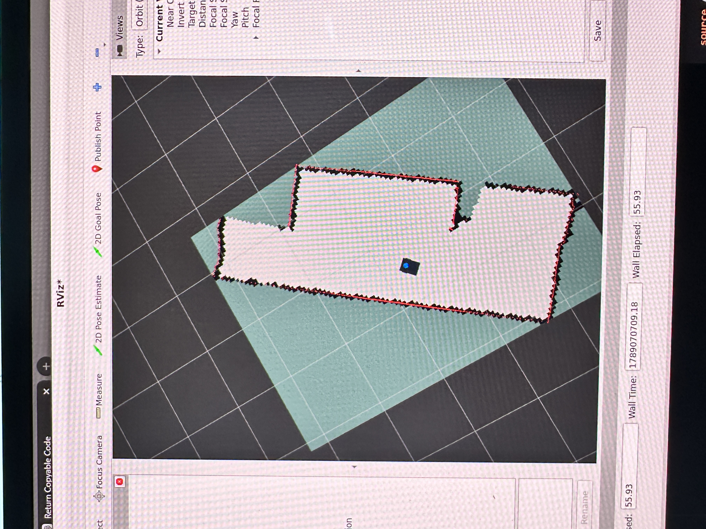

01 / Robotics & embedded systems
Autonomous indoor mapping robot
Building a robot that can turn laser scans into a map, localize itself, and navigate to a destination.


From wheel motion to a world model.
I built a custom differential-drive robot around a Raspberry Pi 5, ESP32, and 360-degree LiDAR. The project connects embedded motor control with the perception and planning stack needed to map an indoor space and navigate through it.
In the physical demonstration, I drove the robot through a room while SLAM Toolbox built a map. After saving that map, AMCL localized the robot and Nav2 drove it to goals selected in RViz.
Encoder feedback closes the control loop. Mapping and saved-map navigation run as separate modes.
What I built
- Embedded wheel control. ESP32 firmware uses encoder feedback with 50 Hz feed-forward/PI control, command ramps, and bounded motor outputs. A separate watchdog stops motion commands that expire.
- The bridge to ROS. A custom C++ ros2_control hardware plugin exchanges wheel commands and encoder feedback over a versioned serial protocol with CRC checks and sequence tracking.
- Mapping and navigation integration. Robot-specific models, transforms, launch files, and configurations connect wheel odometry and LiDAR to SLAM Toolbox, AMCL, and Nav2.
- Mechanical design and simulation. A 3D-printed chassis and sensor mounts support the physical build. A Gazebo model provides a separate environment for mapping and integration work.
Seeing it move
What the evidence shows
The repository includes physical mapping and navigation recordings, simulation artifacts, and automated checks for control logic, serial faults, and ROS integration. These establish initial operation; map accuracy, navigation repeatability, and physical stop timing have not been quantified.
Exploration is a separate step. I also implemented frontier-based exploration to choose new mapping goals. Its recorded verification covers offline tests; integrated exploration and physical exploration results remain to be documented.
Explore the source, architecture, and dated demonstration records on GitHub.